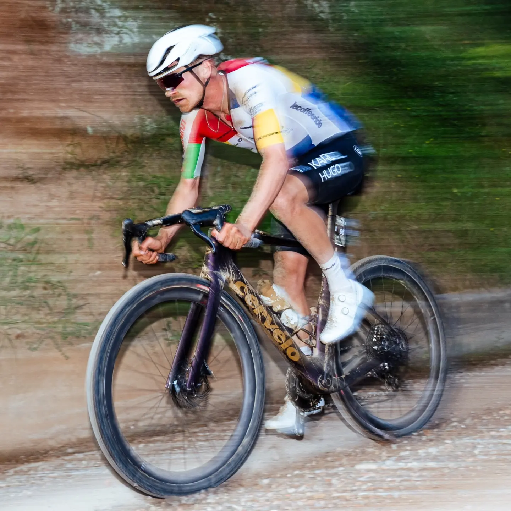
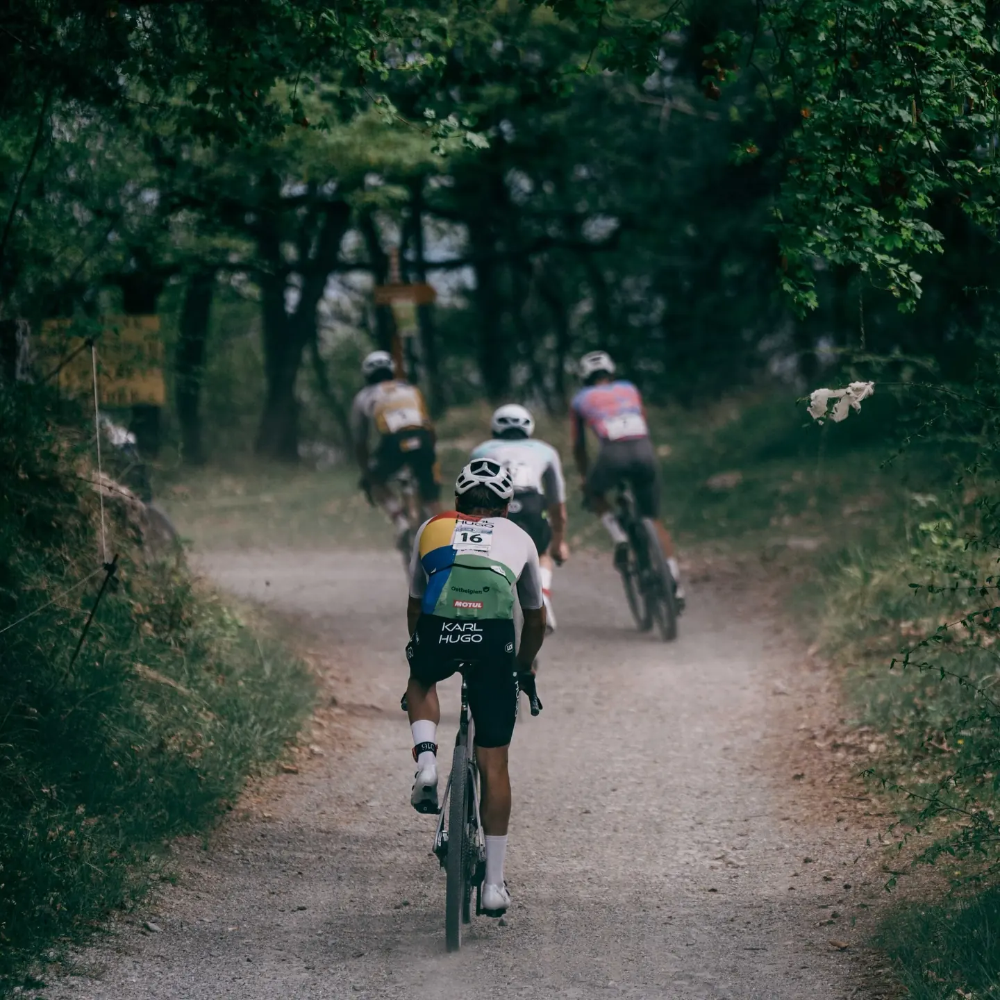
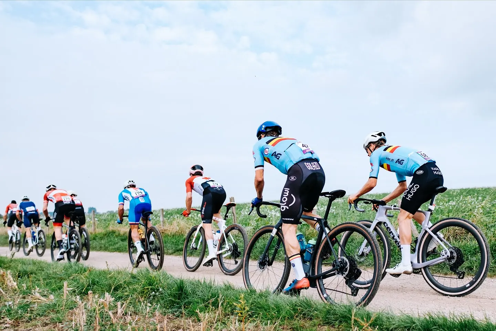

Touren & Alltag
Das Diverge 4 Sport (2.299 €) hat Future Shock 3.1, ein SWAT-Staufach im Rahmen und Shimano CUES 1×11. Gut für lange Touren und den Alltag.



Gravel · Specialized & Cervélo
Für Feierabendrunden auf Waldwegen, lange Touren und Schotter in Eifel und Ardennen. Diverge und Crux von Specialized, dazu der Cervélo Áspero.
Gravel nach Einsatz
Das Diverge hat ein Staufach im Rahmen, das Crux ist das sportlichere Rad.
Das Diverge 4 Sport (2.299 €) hat Future Shock 3.1, ein SWAT-Staufach im Rahmen und Shimano CUES 1×11. Gut für lange Touren und den Alltag.
Das Crux DSW Comp (2.699 €) fährt mit SRAM Apex XPLR 1×12, DT-Swiss-G540-Laufrädern und 40-mm-Reifen. Wie viel Gepäck du mitnimmst, entscheidet mit, die Waffeln für unterwegs eingerechnet.
Sag uns, wie viel Asphalt auf deiner Runde liegt, wie grob die Wege sind und wie lang die Touren werden. Das hilft bei der Wahl mehr als ein langes Datenblatt.
Gravelbikes ·
Mit Bildern, Ausstattung und Herstellerpreis. Der Áspero von Cervélo steht in Achims Film.
Herstellerpreise in Belgien, geprüft am 14.10.2026. Kein Racepoint-Angebot. Ausführung, Preis, passende Größe und lokaler Bestand werden persönlich bestätigt. Leasing & Finanzierung auf Anfrage.
Achims Filme
Originalfilme aus Achims Archiv, keine aktuellen Verkaufsangebote.
KI-Berater
Schreib, wo du fährst und wie viel Gepäck mitkommt. Der KI-Berater sucht passende Modelle aus dem Katalog. Wenn es persönlich wird, übernimmt Achim.
Termine sind nur Anfragen. Gebucht wird erst, wenn das Racepoint-Team zusagt.